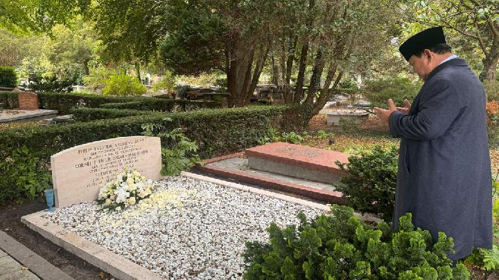

Presiden Prabowo Subianto di sela kunjungannya ke Belanda, menyempatkan berziarah ke makam kakek dan nenek dari sisi ibunya di Den Haag...
Baca SelengkapnyaKecerdasan buatan kini berkembang pesat, membantu manusia dalam berbagai bidang seperti kesehatan, pendidikan, dan keamanan...
Baca Selengkapnya
Tim nasional meraih kemenangan gemilang pada pertandingan terakhir bulan ini. Dengan semangat juang tinggi, mereka berhasil mengalahkan lawan berat dengan skor 3-1. Pelatih menyebut kemenangan ini hasil kerja keras dan kekompakan seluruh pemain. Para suporter di stadion pun menyambut dengan sorak sorai yang menggema.
Baca Selengkapnya